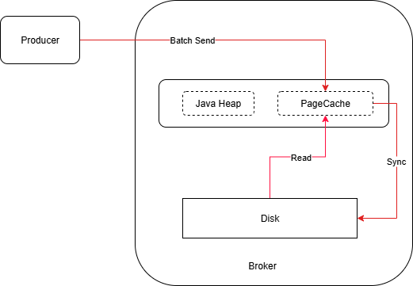
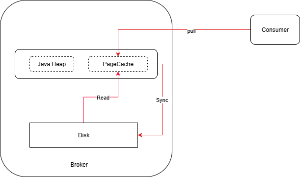
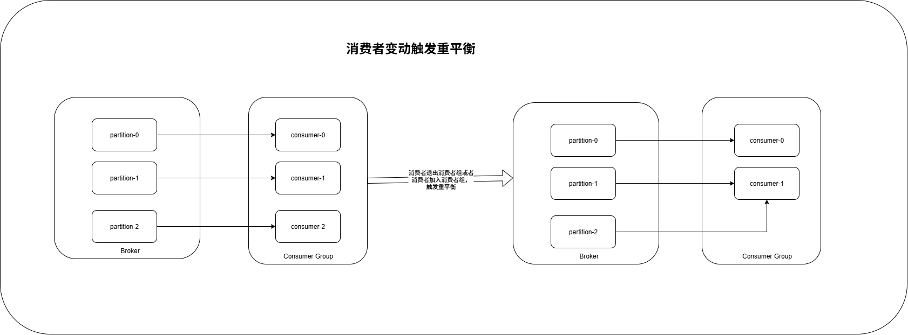
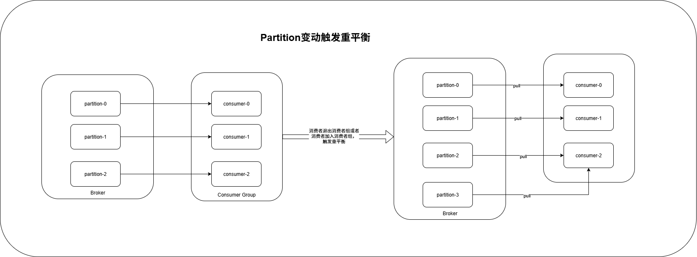

Kafka架构介绍：分区、副本、Broker与Controller
什么是Kafka?
kafka是一个分布式流处理平台，主要用于构建实时数据管道和流应用。它具备高吞吐，低延迟，可拓展和容错等特性。
主要功能包括：
- 发布和订阅数据流：类似消息队列，支持多生产者和多消费者。
- 存储数据流：数据可以被持久化
- 实时处理数据流：支持对数据进行转换，聚合等实时处理操作。
应用场景：
- 日志收集与聚合
- 事件溯源
- 消息队列服务
kafka系统架构
kafka是由prducer，broker、consumer等角色组成、以及zookeeper集群组成
kafka架构图如下所示：

以下是相关组件的概念解释：
- prducer：生产者，负责将消息发送到broker中，支持异步发送和批量发送消息
- broker：服务代理节点，每一个服务属于一个broker，可以进行水平拓展。
- controller：集群中的一个broker作为leader身份来负责管理整个集群，如果controller挂掉，借助zookeeper重新选主。
- consumer：消费者，负责消费broker中的消息，并且多个消费者可以在同一个消费者组，但是一个消费者只能属于一个消费者组，并且同一个partitaion 只能被同一个消费者组内的消费者进行消费。
- consumer group： 消费者组，每条消息只可以被消费者组中一个消费者消费，但是可以被多个消费者组消费，
- Topic： 主题，每条消息都会有一个主题，不支持通配符匹配的方式，kafka是面向topic的
- Partition： 分区，是Topic的物理上的分区，一个topic可以有多个partition，每个partition是一个有序不可变得记录序列，单一主题中的分区有序，但无法保证主题中所有的分区的消息有序。
- leader：领导者，在partition中只有一个leader其他都是fllower，对外提供读写服务
- fllower：追随者，与leader进行同步，当leader出现异常，从fllower中推选出作为leader
- replica：副本，每个分区可以设置多个副本，副本之间数据一致。相当于备份，有备胎更可靠；
- zookeeper：维护broker集群中的meta消息
消息产生和持久化
- producer产生消息。
- producer产生的消息积累到指定设置后，批量发送消息到Broker中，减少网络连接次数。
- Broker接收到消息后会将消息先存放在Broker的pageCache，返回相关消息给producer
- Borker中将Page Cache经过同步将消息刷入磁盘文件中，并且是顺序写入到文件中
流程如下所示：

消费消息
- consumer通过pull方式从broker获取消息
- broker接收到请求后，从pageCache中是否有当前所需的数据，没有则需要从磁盘文件中加载，磁盘文件加载数据进入cache中
- 最后将需要的数据以及相邻的数据放到PageCache并且发送给Consumer

kafka重平衡
kafka重平衡协议是指消费者组内的消费者数量发生变化或者订阅的主题分区数量发生变化，或者是自动触发的定期重平衡，kafka会重新分配消费者和分区的消费关系，以实现负载均衡的效果。这个过程确保了每个消费者都能均衡的消费到分区中的消息，提高整体的消费能力和并发性。
但是重平衡会导致消费者停止消费一段时间，需要重新平衡后为消费者组内的消费者重新分配分区后，才能进行消费，这就给我们消息消费带来波动，如果消息过多，重平衡时间过长导致消息积压，不能及时消费，在实际生产中我们需要避免这种情况
kafka消费者重平衡：

kafka分区变动重平衡：

重平衡优点：
- 负载均衡：重平衡可以确保消费者组中的每个消费者都能平衡的消费消息，避免某些消费者过载或者处于空闲状态
- 弹性扩展：当有消费者加入消费者组时，重平衡可以自动重新分配分区，使新的消费者能够参与消费
- 容错性：当有消费者离开消费者组或发生故障时，重平衡可以重新分配分区给其他消费者，确保消息的持续消费，提高系统的可用性。
- 灵活性：重平衡可以根据主题的分区数量变化自动调整消费者的分区分配，适应系统的动态变化。
重平衡的缺点：
- 消费者暂停：在重平衡期间，消费者的消费会被暂停，可能导致消息的延迟。
- 频繁重平衡：如果消费者组中的消费者频繁加入或离开，或者主题的分区数量经常变化，会导致频繁的重平衡，增加系统的开销和复杂性。
- 消费者位移管理：重平衡可能导致消费者的位移（offset）发生变化，需要进行位移管理，确保消息的准确消费。
Kafka架构介绍：分区、副本、Broker与Controller
https://feature-zing.github.io/2025/07/14/Kafka架构介绍：分区、副本、Broker与Controller/